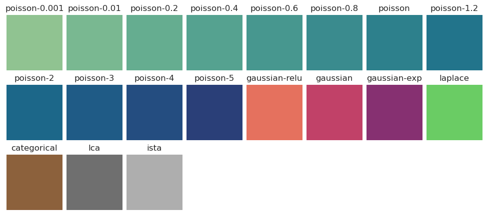
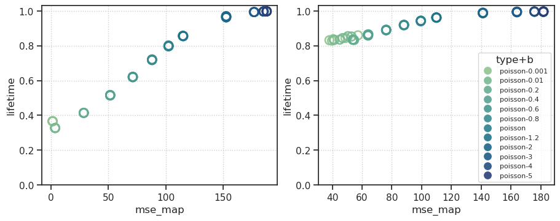
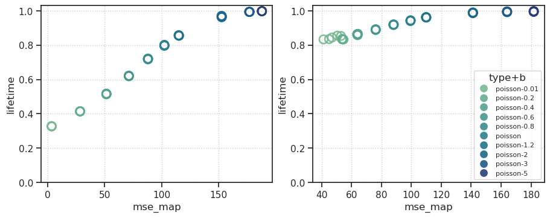
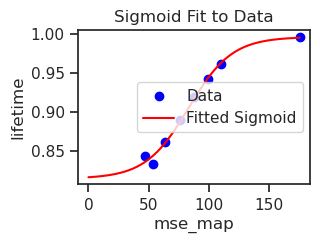
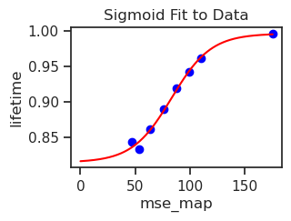

(02) df: beta#
Motivation: Device = cuda:3
Show code cell source
# HIDE CODE
import os, sys
from IPython.display import display
# tmp & extras dir
git_dir = os.path.join(os.environ['HOME'], 'Dropbox/git')
extras_dir = os.path.join(git_dir, 'jb-vae/_extras')
fig_base_dir = os.path.join(git_dir, 'jb-vae/figs')
tmp_dir = os.path.join(git_dir, 'jb-vae/tmp')
# GitHub
sys.path.insert(0, os.path.join(git_dir, 'PoissonVAE'))
from analysis.eval import sparse_score
from figures.fighelper import *
from main.train_vae import *
# warnings, tqdm, & style
warnings.filterwarnings('ignore', category=DeprecationWarning)
warnings.filterwarnings('ignore', category=FutureWarning)
warnings.filterwarnings('ignore', category=UserWarning)
from rich.jupyter import print
%matplotlib inline
set_style()
Device#
device_idx = 3
device = f'cuda:{device_idx}'
from analysis.final import sort_fits, analyze_fits
Load, make df#
Fit names#
fits, fits_st, fits_etc = sort_fits()
len(fits), len(fits_st), len(fits_etc)
(7, 0, 120)
df#
def accept_fn(name):
archi = name.split('-')[1]
accept = (
archi in ['<lin|lin>', '<conv+b|lin>']
and 'poisson-' in name
and '-vH16-' in name
)
return accept
fits = sorted(filter(accept_fn, fits))
fits_etc = sorted(filter(accept_fn, fits_etc))
print(f"# fits: {len(fits)} ——— # fits_etc: {len(fits_etc)}")
# fits: 1 ——— # fits_etc: 120
%%time
kws = dict(device=device, analysis_mode='main')
df = analyze_fits(fits_etc, **kws)
save_obj(
obj=df,
file_name=f'df_beta_main_({now()})',
save_dir=tmp_dir,
verbose=True,
mode='df',
)
100%|█████████████████████████████████████████| 120/120 [01:43<00:00, 1.15it/s]
[PROGRESS] 'df_beta_main_(2024_12_02).df' saved at
/home/hadi/Dropbox/git/jb-vae/tmp
CPU times: user 58min 34s, sys: 2min 36s, total: 1h 1min 11s
Wall time: 1min 44s
for sparse_key in ['lifetime', 'population']:
kws = dict(
device=device,
analysis_mode='sparse',
sparse_key=sparse_key,
)
df = analyze_fits(fits_etc, **kws)
save_obj(
obj=df,
file_name=f'df_beta_{sparse_key}_({now()})',
save_dir=tmp_dir,
verbose=True,
mode='df',
)
100%|█████████████████████████████████████████| 120/120 [01:40<00:00, 1.19it/s]
[PROGRESS] 'df_beta_lifetime_(2024_12_02).df' saved at
/home/hadi/Dropbox/git/jb-vae/tmp
100%|█████████████████████████████████████████| 120/120 [01:44<00:00, 1.15it/s]
[PROGRESS] 'df_beta_population_(2024_12_02).df' saved at
/home/hadi/Dropbox/git/jb-vae/tmp
Load for analysis#
df_beta_lifetime = pjoin(tmp_dir, 'df_beta_lifetime_(2024_12_02).df')
df_beta_lifetime = pd.read_pickle(df_beta_lifetime)
df_beta_lifetime.pivot_table(
values='lifetime',
index=['enc_type', 'n_dims'],
columns='kl_beta',
)
| kl_beta | 0.001 | 0.010 | 0.200 | 0.400 | 0.600 | 0.800 | 1.000 | 1.200 | 2.000 | 3.000 | 4.000 | 5.000 | |
|---|---|---|---|---|---|---|---|---|---|---|---|---|---|
| enc_type | n_dims | ||||||||||||
| conv | 512 | 0.840751 | 0.844315 | 0.834348 | 0.861793 | 0.890371 | 0.919102 | 0.942705 | 0.961863 | 0.988347 | 0.994208 | 0.996249 | 0.995974 |
| lin | 512 | 0.366565 | 0.327579 | 0.414469 | 0.515815 | 0.620669 | 0.719455 | 0.798561 | 0.856126 | 0.965995 | 0.993746 | 0.997027 | 0.997641 |
df_beta_lifetime.loc[df_beta_lifetime['enc_type'] == 'lin'].pivot_table(
values='lifetime',
index='n_dims',
columns='kl_beta',
)
| kl_beta | 0.001 | 0.010 | 0.200 | 0.400 | 0.600 | 0.800 | 1.000 | 1.200 | 2.000 | 3.000 | 4.000 | 5.000 |
|---|---|---|---|---|---|---|---|---|---|---|---|---|
| n_dims | ||||||||||||
| 512 | 0.366565 | 0.327579 | 0.414469 | 0.515815 | 0.620669 | 0.719455 | 0.798561 | 0.856126 | 0.965995 | 0.993746 | 0.997027 | 0.997641 |
df_beta_main = pjoin(tmp_dir, 'df_beta_main_(2024_12_02).df')
df_beta_main = pd.read_pickle(df_beta_main)
df_beta_main['type'].unique()
array(['poisson-b0.001', 'poisson-b0.01', 'poisson-b0.2', 'poisson-b0.4',
'poisson-b0.6', 'poisson-b0.8', 'poisson-b1.2', 'poisson',
'poisson-b2', 'poisson-b3', 'poisson-b4', 'poisson-b5'],
dtype=object)
df_beta_main.loc[df_beta_main['enc_type'] == 'lin'].pivot_table(
values='mse',
index='n_dims',
columns='kl_beta',
)
| kl_beta | 0.001 | 0.010 | 0.200 | 0.400 | 0.600 | 0.800 | 1.000 | 1.200 | 2.000 | 3.000 | 4.000 | 5.000 |
|---|---|---|---|---|---|---|---|---|---|---|---|---|
| n_dims | ||||||||||||
| 512 | 9.042665 | 20.511448 | 70.057968 | 95.014786 | 112.471535 | 125.950485 | 136.741928 | 145.855835 | 171.066803 | 185.171478 | 188.93428 | 189.845474 |
df_beta_main.loc[df_beta_main['enc_type'] == 'lin'].pivot_table(
values='mse_map',
index='n_dims',
columns='kl_beta',
)
| kl_beta | 0.001 | 0.010 | 0.200 | 0.400 | 0.600 | 0.800 | 1.000 | 1.200 | 2.000 | 3.000 | 4.000 | 5.000 |
|---|---|---|---|---|---|---|---|---|---|---|---|---|
| n_dims | ||||||||||||
| 512 | 1.414432 | 3.628213 | 28.563732 | 51.629326 | 71.337326 | 88.094589 | 102.493324 | 115.17466 | 152.754013 | 177.088303 | 185.349991 | 188.060028 |
df_beta_main.loc[df_beta_main['enc_type'] == 'lin'].pivot_table(
values='active',
index='n_dims',
columns='kl_beta',
)
| kl_beta | 0.001 | 0.010 | 0.200 | 0.400 | 0.600 | 0.800 | 1.000 | 1.200 | 2.000 | 3.000 | 4.000 | 5.000 |
|---|---|---|---|---|---|---|---|---|---|---|---|---|
| n_dims | ||||||||||||
| 512 | 0.821094 | 0.961719 | 0.994141 | 0.992188 | 0.986328 | 0.987891 | 0.989062 | 0.989453 | 0.994531 | 0.951953 | 0.474219 | 0.296484 |
df_beta_main.shape, df_beta_lifetime.shape
((120, 21), (61440, 13))
# mse
df_selec_main = df_beta_main.loc[
(df_beta_main['n_dims'] == 512) &
(df_beta_main['enc_type'].isin(['lin', 'conv']))
]
df_selec_main.drop(
columns=[
'checkpoint', 'timestamp', 'dataset', 'dec_type', 'active', 'kl', 'kl_diag',
'temp_anneal', 'temp_start', 'temp_stop', 'hard_fwd'],
inplace=True,
)
# lifetime
df_selec_lifetime = df_beta_lifetime.loc[
(df_beta_lifetime['n_dims'] == 512) &
(df_beta_lifetime['enc_type'].isin(['lin', 'conv']))
]
df_selec_lifetime = df_selec_lifetime.groupby(
['enc_type', 'kl_beta', 'seed']).mean(numeric_only=True)
df_selec_lifetime = df_selec_lifetime['lifetime'].reset_index()
df_selec_main.shape, df_selec_lifetime.shape
((120, 10), (120, 4))
df_selec_main
| type | enc_type | n_dims | seed | kl_beta | n_params | method | mse | mse_map | nelbo | |
|---|---|---|---|---|---|---|---|---|---|---|
| 0 | poisson-b0.001 | conv | 512 | 1 | 0.001 | 1405596 | mc | 56.653316 | 48.837059 | 3194.008301 |
| 1 | poisson-b0.001 | conv | 512 | 2 | 0.001 | 1405596 | mc | 64.317390 | 57.209873 | 2637.829346 |
| 2 | poisson-b0.001 | conv | 512 | 3 | 0.001 | 1405596 | mc | 45.341522 | 38.044823 | 3780.258545 |
| 3 | poisson-b0.001 | conv | 512 | 4 | 0.001 | 1405596 | mc | 47.391064 | 39.786072 | 3488.910889 |
| 4 | poisson-b0.001 | conv | 512 | 5 | 0.001 | 1405596 | mc | 48.317738 | 40.606983 | 4740.405273 |
| ... | ... | ... | ... | ... | ... | ... | ... | ... | ... | ... |
| 115 | poisson-b5 | lin | 512 | 1 | 5.000 | 262656 | mc | 189.895233 | 188.106461 | 190.281311 |
| 116 | poisson-b5 | lin | 512 | 2 | 5.000 | 262656 | mc | 189.730225 | 188.013702 | 190.114075 |
| 117 | poisson-b5 | lin | 512 | 3 | 5.000 | 262656 | mc | 189.882156 | 188.062012 | 190.271194 |
| 118 | poisson-b5 | lin | 512 | 4 | 5.000 | 262656 | mc | 189.809158 | 188.094437 | 190.202560 |
| 119 | poisson-b5 | lin | 512 | 5 | 5.000 | 262656 | mc | 189.910583 | 188.023529 | 190.292633 |
120 rows × 10 columns
looper = itertools.product(
sorted(df_selec_main['enc_type'].unique()),
sorted(df_selec_main['kl_beta'].unique()),
sorted(df_selec_main['seed'].unique()),
)
df2p = collections.defaultdict(list)
for e, b, s in looper:
mse_map = df_selec_main.loc[
(df_selec_main['seed'] == s) &
(df_selec_main['kl_beta'] == b) &
(df_selec_main['enc_type'] == e),
'mse_map',
].item()
lifetime = df_selec_lifetime.loc[
(df_selec_lifetime['seed'] == s) &
(df_selec_lifetime['kl_beta'] == b) &
(df_selec_lifetime['enc_type'] == e),
'lifetime',
].item()
vals = {
'type': 'poisson',
'type+b': 'poisson' if b == 1.0
else f"poisson-{b:0.2g}",
'seed': s,
'beta': b,
'enc_type': e,
'mse_map': mse_map,
'lifetime': lifetime,
}
for k, v in vals.items():
df2p[k].append(v)
df2p = pd.DataFrame(df2p)
def get_palette():
# poisson
betas = [
0.001, 0.01, 0.2, 0.4, 0.6, 0.8,
1.0, 1.2, 2.0, 3.0, 4.0, 5.0,
]
colors = sns.color_palette(
'crest', n_colors=len(betas))
palette = {
'poisson' if b == 1.0 else f"poisson-{b:0.2g}":
c for b, c in zip(betas, colors)
}
palette_beta = {
b: c for b, c in zip(betas, colors)
}
# gaussian
items = ['-relu', '', '-exp']
colors = sns.color_palette(
'flare', n_colors=len(items))
palette.update({
'gaussian' + k: c for k, c
in zip(items, colors)
})
# laplace, categorical
muted = sns.color_palette('muted')
palette.update({
'laplace': muted[2],
'categorical': muted[5],
})
# lca, ista
palette.update({
'lca': '#6f6f6f',
'ista': '#aeaeae',
})
# lambda (lca)
lamb = [0.001, 0.005, 0.01, 0.05, 0.1, 0.5, 0.7, 1.0]
colors = sns.cubehelix_palette(n_colors=len(lamb))
palette_lamb = {
lamb: c for lamb, c in zip(lamb, colors)
}
return palette, palette_beta, palette_lamb
palette, palette_beta, palette_lamb = get_palette()
show_palette(palette)

fig, axes = create_figure(1, 2, figsize=(9, 3.5))
for i, enc in enumerate(['lin', 'conv']):
ax = axes.flat[i]
sns.scatterplot(
data=df2p.loc[df2p['enc_type'] == enc],
x='mse_map',
y='lifetime',
hue='type+b',
palette=palette,
alpha=0.9,
s=100,
ax=ax,
)
for artist in ax.collections:
c = artist.get_facecolor()
artist.set_edgecolor(c)
artist.set_facecolor('none')
artist.set_lw(1.9)
ax.set_ylim(bottom=0, top=1.03)
if i == 0:
move_legend(ax)
else:
sns.move_legend(ax, loc='lower right', fontsize=8)
ax.grid()
plt.show()

selected_betas = [
0.01, 0.2, 0.4, 0.6, 0.8,
1.0, 1.2, 2.0, 3.0, 5.0,
]
fig, axes = create_figure(1, 2, figsize=(9, 3.5))
for i, enc in enumerate(['lin', 'conv']):
ax = axes.flat[i]
_df = df2p.loc[
(df2p['beta'].isin(selected_betas)) &
(df2p['enc_type'] == enc)
]
sns.scatterplot(
data=_df,
x='mse_map',
y='lifetime',
hue='type+b',
palette=palette,
alpha=0.9,
s=100,
ax=ax,
)
for artist in ax.collections:
c = artist.get_facecolor()
artist.set_edgecolor(c)
artist.set_facecolor('none')
artist.set_lw(1.9)
ax.set_ylim(bottom=0, top=1.03)
if i == 0:
move_legend(ax)
else:
sns.move_legend(ax, loc='lower right', fontsize=8)
ax.grid()
plt.show()

save_obj(
obj=df2p,
file_name=f'df2p_poisson_beta_(now())',
save_dir=tmp_dir,
mode='df',
)
[PROGRESS] 'df2p_poisson_beta_(now()).df' saved at
/home/hadi/Dropbox/git/jb-vae/tmp
Fit sigmoid#
selected_betas = [
0.01, 0.2, 0.4, 0.6, 0.8,
1.0, 1.2, 4.0,
]
enc = 'conv'
df2p_convbeta = df2p.loc[
(df2p['enc_type'] == enc) &
(df2p['beta'].isin(selected_betas))
]
df2p_convbeta = df2p_convbeta.groupby(by=['beta']).mean(
numeric_only=True).drop(columns=['seed']).reset_index()
df2p_convbeta
| beta | mse_map | lifetime | |
|---|---|---|---|
| 0 | 0.01 | 47.343404 | 0.844315 |
| 1 | 0.20 | 54.011217 | 0.834348 |
| 2 | 0.40 | 63.992791 | 0.861793 |
| 3 | 0.60 | 76.148015 | 0.890371 |
| 4 | 0.80 | 88.115875 | 0.919102 |
| 5 | 1.00 | 99.448260 | 0.942705 |
| 6 | 1.20 | 109.912793 | 0.961863 |
| 7 | 4.00 | 175.741937 | 0.996249 |
save_obj(
obj=df2p_convbeta,
file_name='df2p_poisson_conv_beta',
save_dir=pjoin(tmp_dir, 'pvae_results'),
mode='df',
)
[PROGRESS] 'df2p_poisson_conv_beta.df' saved at
/home/hadi/Dropbox/git/jb-vae/tmp/pvae_results
import numpy as np
import pandas as pd
from scipy.optimize import curve_fit
import matplotlib.pyplot as plt
# Example data (replace these with your actual data)
x_data = df2p_convbeta['mse_map'].values
y_data = df2p_convbeta['lifetime'].values
# Define the sigmoid function
def sigmoid(x, L, x0, k, y0):
return L / (1 + np.exp(-k * (x - x0))) + y0
# Initial guesses for parameters
L_guess = max(y_data) - min(y_data) # Range of y
x0_guess = np.median(x_data) # Midpoint of x
k_guess = 0.1 # Initial steepness guess
y0_guess = min(y_data) # Minimum y value
p0 = [L_guess, x0_guess, k_guess, y0_guess] # Initial parameter guess
# Fit the curve
popt, pcov = curve_fit(sigmoid, x_data, y_data, p0)
# Extract the fitted parameters
L, x0, k, y0 = popt
print(f"Fitted parameters:\nL = {L:.3f}, x0 = {x0:.3f}, k = {k:.3f}, y0 = {y0:.3f}")
# Plot the data and the fitted curve
x_fit = np.linspace(0, max(x_data), 500)
y_fit = sigmoid(x_fit, *popt)
plt.scatter(x_data, y_data, label='Data', color='blue')
plt.plot(x_fit, y_fit, label='Fitted Sigmoid', color='red')
plt.xlabel('mse_map')
plt.ylabel('lifetime')
plt.legend()
plt.title('Sigmoid Fit to Data')
plt.show()
Fitted parameters: L = 0.182, x0 = 83.354, k = 0.056, y0 = 0.815

x_fit = np.linspace(0, max(x_data), 500)
y_fit = sigmoid_beta_conv(x_fit)
plt.scatter(x_data, y_data, label='Data', color='blue')
plt.plot(x_fit, y_fit, label='Fitted Sigmoid', color='red')
plt.xlabel('mse_map')
plt.ylabel('lifetime')
plt.title('Sigmoid Fit to Data')
plt.show()

df2p_new_conv = df2p.loc[
(df2p['enc_type'] == 'conv') &
(df2p['beta'] == 1.0)
]
df2p_new_conv = df2p_new_conv.drop(columns=['type+b', 'beta', 'enc_type'])
df2p_new_conv
| type | seed | mse_map | lifetime | |
|---|---|---|---|---|
| 30 | poisson | 1 | 99.520309 | 0.943217 |
| 31 | poisson | 2 | 99.378944 | 0.940353 |
| 32 | poisson | 3 | 99.456566 | 0.943551 |
| 33 | poisson | 4 | 99.473259 | 0.944062 |
| 34 | poisson | 5 | 99.412224 | 0.942340 |
save_obj(
obj=df2p_new_conv,
file_name='df2p_new_conv',
save_dir=pjoin(tmp_dir, 'pvae_results'),
mode='df',
)
[PROGRESS] 'df2p_new_conv.df' saved at
/home/hadi/Dropbox/git/jb-vae/tmp/pvae_results